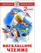

В сборники вошли рекомендованные для прочтения во 2 классе лучшие детские произведения классиков русской литературы: М. Пришвина, К. Паустовского, В. Бианки, В. Драгунского, В. Катаева, Н. Сладкова, Е. Пермяка, Г. Скребицкого, Б. Житкова и других. Сборник состоит из четырех тематических частей: "Страна детства" (о детях и их увлечениях), "Мир вокруг нас" (о природе), "Расскажу вам сказку" (сказки и сказочные истории), "Весёлая переменка" (смешные рассказы). Каждый рассказ, даже самый маленький, проиллюстрирован одним или несколькими рисунками, что делает прочтение книги полезным и приятным для детей.